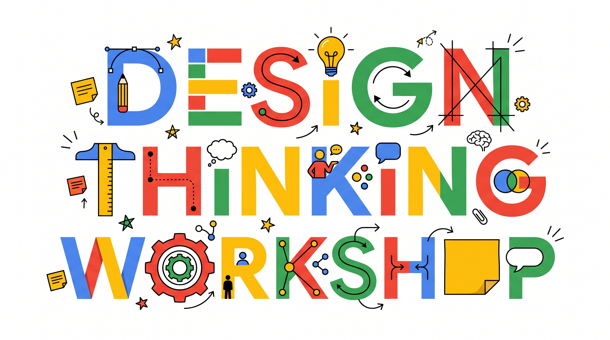
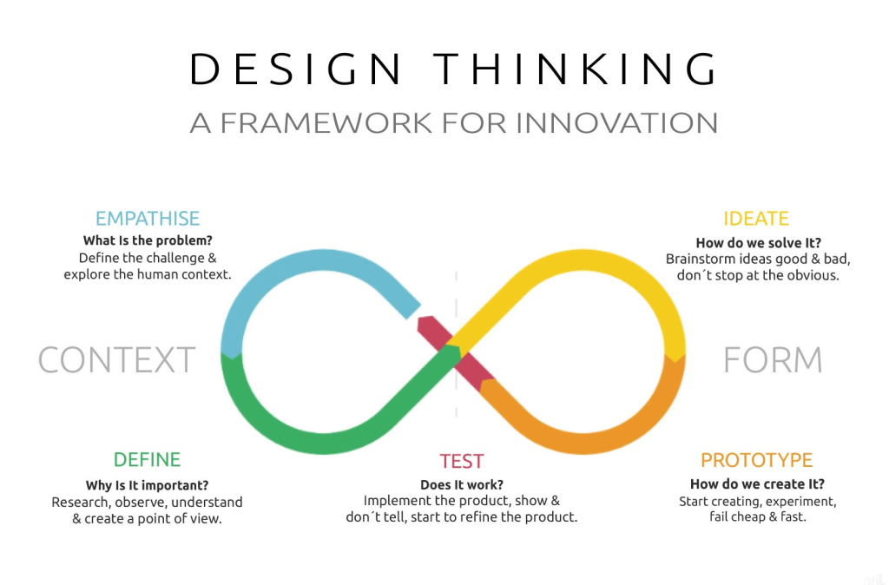
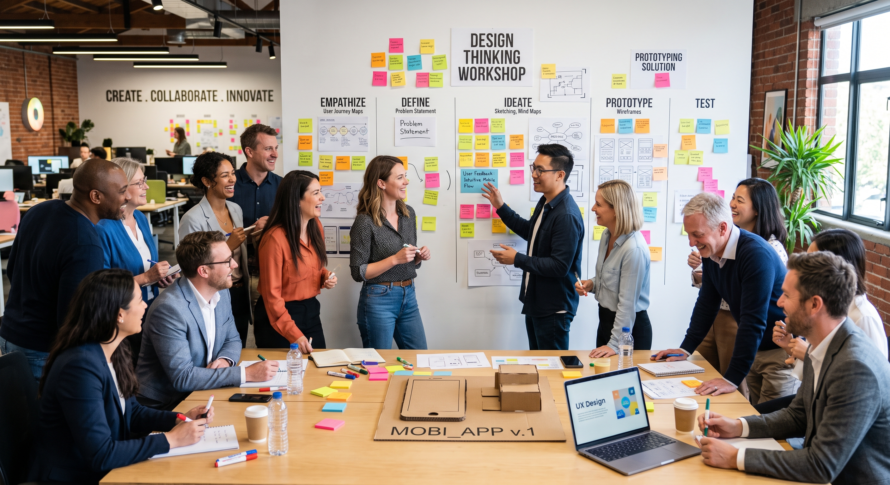

Design Thinking Workshop
인간 중심 혁신 워크숍

Design Thinking Workshop이란?
다양한 관점의 융합과 실습을 통한 인간 중심의 문제 해결 협업 세션
Design Thinking Workshop은 다양한 분야의 팀원들이 모여 사용자의 니즈를 깊이 있게 이해하고, 창의적인 문제 해결 기법을 통해 실질적인 솔루션을 공동으로 창출하는 실습 중심의 협업 세션입니다.
다양한 분야의 팀원
기획자, 개발자, 디자이너, 현장 실무자가 한자리에 모여 서로 다른 관점과 전문성을 교차 융합합니다.
사용자 니즈의 심층 이해
공급자 시각의 가설을 내려놓고, 실제 사용자가 겪는 불편과 숨겨진 결핍(Latent Needs)에 깊이 공감합니다.
실습 중심 공동 창출
말과 글에 머무는 탁상공론이 아닌, 직접 손으로 프로토타입을 제작하고 검증하며 실행 가능한 해법을 도출합니다.
Design Thinking Workshop
인간 중심의 문제 정의와 창의적 솔루션 도출
인간 중심 관점
기술이나 가정이 아닌, 실제 고통을 겪는 사용자의 맥락(Context)과 숨은 결핍(Latent Needs)에서 출발합니다.
행동 지향 문화
탁상공론을 멈추고 신속한 페이퍼 목업과 손스케치로 아이디어를 눈에 보이게 만들어 검증합니다.
반복을 통한 진화
완벽한 첫 시도란 없습니다. 초기 실패를 값진 학습으로 전환하며 피드백을 통해 솔루션을 고도화합니다.
워크숍 성공을 위한 4가지 그라운드 룰
처음 참가하는 모든 팀원이 심리적 안정감 속에서 의견을 낼 수 있는 기본 약속입니다.
판단을 유예하세요 (Defer Judgment)
어떤 아이디어도 '그건 안 돼'라고 비판하지 않습니다. '하지만' 대신 '그리고(Yes, and)'로 받습니다.
질보다 양에 집중하세요 (Go for Quantity)
좋은 아이디어를 얻는 가장 확실한 방법은 아주 많은 아이디어를 내보는 것입니다. 엉뚱한 상상을 환영합니다.
초심자의 마음을 유지하세요 (Beginner's Mindset)
직급과 기존 전문성을 잠시 내려놓고, 어린아이처럼 순수한 호기심으로 본질을 질문합니다.
생각하지 말고 만드세요 (Bias Toward Action)
말로는 10분을 토론해도 합의되지 않는 내용이, 거친 손그림과 종이 모형 하나로 10초 만에 정리됩니다.
Design Thinking 5단계 프로세스
정해진 선형 구조가 아니며, 언제든 이전 단계로 돌아갈 수 있는 유연한 여정입니다.
Empathize
사용자의 숨겨진 니즈와 고통을 깊이 관찰하고 경청합니다.
Define
인사이트를 기반으로 진짜 풀어야 할 핵심 문제를 명확히 규명합니다.
Ideate
선입견 없이 솔루션을 폭넓게 도출하고 핵심을 선별합니다.
Prototype
손으로 만지고 검증할 수 있는 저충실도 모형을 제작합니다.
Test
사용자 반응을 관찰하고 솔루션과 가설을 개선합니다.
Design Thinking 인피니티 루프 프레임워크
문제 맥락(Context)과 솔루션 형상(Form)을 끝없이 순환하며 검증하는 혁신 프레임워크입니다.

Design Thinking 실전 액션 & 팀 활동
아이디어를 손으로 만지고 적극적으로 소통하며 실행으로 옮기는 팀 활동 가이드입니다.

Empathize: 사용자와 깊게 연결되기
우리가 해결하려는 문제는 우리 자신의 문제가 아니라, 사용자의 문제입니다.
Observe (관찰)
사용자가 실제 맥락 속에서 행동하는 방식을 제3자의 눈으로 편견 없이 살펴봅니다.
- 행동의 마찰 지점 기록
- 언어적/비언어적 단서 포착
Engage (대화/인터뷰)
단순한 사실 관계 질문을 넘어 사용자의 감정과 의도를 이끌어내는 대화를 나눕니다.
- "왜?"를 거듭 묻기
- 최근의 구체적 일화 질문
Immerse (직접 체험)
사용자가 겪는 물리적, 심리적 환경을 직접 경험하여 공감의 깊이를 더합니다.
- 사용자 워크플로우 직접 실행
- 불편함과 피로도 체감
공감 인터뷰의 황금률
원하는 답을 유도하지 않고, 솔직한 고통과 스토리를 여는 질문법입니다.
효과적인 공감 질문
- "가장 최근에 이 문제를 겪었을 때의 상황을 구체적으로 들려주세요."
- "그 순간에 어떤 감정이 드셨나요? 왜 그렇게 느끼셨나요?"
- 침묵이 흐르더라도 최소 5초간 기다려 상대가 말을 잇게 하세요.
- 한 명은 인터뷰를 주도하고, 다른 한 명은 맥락을 상세히 기록하세요.
피해야 할 함정
- "보통 어떻게 하시나요?"와 같은 일반화 질문 (구체성이 사라집니다).
- "이런 기능이 있으면 좋으시겠죠?" 유도 질문 (예의상 동의하게 됩니다).
- 사용자의 답변 도중에 끼어들어 내 생각이나 솔루션을 설명하기.
- 수치나 통계에 집착하여 감정과 정서적 이유를 놓치는 것.
[실습] 페르소나 및 공감 맵 작성
우리 팀이 집중할 타깃 사용자를 구체화하고 감정선과 행동을 지도화합니다.
[실전 예시] 김지호 매니저의 공감 맵
실습 결과물은 이렇게 나옵니다. 완벽한 문장이 아닌 솔직한 포스트잇 메모면 충분합니다.
Define: 진짜 문제 규명하기
모든 것을 다 해결할 수는 없습니다. 팀이 집중할 명확한 전선을 긋습니다.
현상(Fact) vs 인사이트(Insight)
눈에 보이는 현상은 증상일 뿐입니다. 그 이면에 숨겨진 본질적 동기를 밝혀내야 합니다.
- 현상: "퇴근 직전 업무 요청으로 야근이 잦다."
- 인사이트: "요청자의 불안감 때문에 사소한 중간 확인이 과도하게 반복되고 있다."
좋은 문제 정의의 조건
- 인간 중심적: 특정 시스템이나 기술이 아닌 사람의 관점이어야 합니다.
- 충분히 좁게: 팀이 당장 실행할 수 있는 명확한 범위를 가집니다.
- 충분히 넓게: 다양한 솔루션이 나올 수 있는 상상력의 여지를 남깁니다.
POV와 HMW 공식
인사이트를 실행 가능한 질문으로 전환하는 핵심 프레임워크입니다.
Point of View (POV) 정의
[사용자]는 [필요/니즈]를 원한다. 왜냐하면 [뜻밖의 인사이트] 때문이다.
How Might We (HMW) 질문
"우리가 어떻게 하면 [사용자]가 [인사이트]를 극복하고 [목표]를 달성하게 도울 수 있을까?"
[실습] 최종 POV 문장 및 HMW 질문 확정
팀의 모든 에너지를 한곳에 모을 단 하나의 강력한 질문을 결정합니다.
[실전 예시] 완성된 POV 문장과 HMW 질문
공감 맵의 Pain Point가 어떻게 날카로운 질문으로 바뀌는지 확인하세요.
"타 부서 협업이 잦은 김지호 매니저는 상대방의 실시간 작업 상태를 투명하게 확인하길 원한다. 왜냐하면 직접 재촉하는 과정에서 심한 감정 소모와 관계 단절의 불안감을 느끼기 때문이다."
Ideate: 양적 발산과 상상력의 확장
첫 번째 떠오르는 아이디어는 보통 진부합니다. 뻔한 생각을 넘어서야 혁신이 나옵니다.
판단 유예 (No Judging)
"예산이 없어서 안 돼", "법적으로 불가능해"라는 말을 금지합니다. 실현 가능성은 나중에 따집니다.
엉뚱한 발상 환영 (Encourage Wild)
극단적이고 황당해 보이는 아이디어가 종종 획기적인 실마리를 제공합니다.
타인의 생각에 덧붙이기 (Build on Ideas)
동료의 아이디어에 또 다른 아이디어를 얹어 새로운 결합 아이디어를 탄생시킵니다.
발산과 수렴 기법: Crazy 8s & 2x2 매트릭스
빠른 시간 안에 개인 발산을 극대화하고, 팀 기준에 맞춰 수렴합니다.
Crazy 8s (크레이지 에잇)
A4 용지를 8칸으로 접은 후, 8분 동안 매 분마다 1칸씩 서로 다른 8개의 아이디어를 스케치합니다.
- 글자보다는 단순한 그림/도식 위주로 표현
- 깊게 생각하지 않고 직관적으로 빠르게 칸 채우기
Impact vs Effort 2x2 매트릭스
도출된 수십 개의 아이디어를 '사용자 임팩트'와 '구현 난이도' 축에 배치합니다.
- Sweet Spot: 고임팩트 - 저비용 (Quick Wins 우선 검토)
- Strategic: 고임팩트 - 고비용 (핵심 프로토타입 대상)
[실습] 아이디어 폭풍 도출 및 솔루션 선정
팀당 최소 30개 이상의 아이디어를 쏟아내고, 프로토타입으로 만들 1개를 확정합니다.
[실전 예시] Crazy 8s 스케치와 2x2 매트릭스
A4 종이에 손으로 그린 8칸 아이디어와 투표로 압축된 결과물 모습입니다.
Prototype: 생각하지 말고 만들기
프로토타입의 목적은 '완성'이 아닙니다. '생각을 구체화하고 빠르게 학습하는 것'입니다.
저충실도 (Low-Fidelity)
종이, 포스트잇, 박스, 모바일 와이어프레임 등으로 30분 안에 만듭니다. 너무 잘 만들면 버리기 아까워집니다.
핵심 가설에 집중
전체 서비스를 다 만들지 마세요. "사용자가 과연 이 기능을 원할까?"를 검증하는 단 하나의 핵심 접점만 제작합니다.
빠른 실패가 최대의 절약
종이 단계에서 실패하는 비용은 몇 백 원이지만, 코드로 개발한 후 실패하는 비용은 수억 원입니다.
상황별 프로토타입 형태
아이디어의 성격(디지털 앱, 업무 프로세스, 물리적 서비스)에 맞는 형식을 고릅니다.
페이퍼 와이어프레임 (Paper Mockup)
디지털 화면/앱 서비스인 경우, 손으로 종이에 주요 화면 3~5장을 그려 참가자가 직접 손가락으로 누르게 합니다.
스토리보드 (Storyboard)
업무 프로세스나 고객 여정인 경우, 사용자가 문제를 겪는 상황부터 해결되는 순간까지 4~6컷 만화로 표현합니다.
롤플레잉 / 모형 (Roleplay / Physical)
상담, 안내, 팀 간 소통 등 서비스 상호작용인 경우, 팀원이 역할을 나누어 1분짜리 상황극으로 시연합니다.
[실습] 초고속 저충실도 프로토타입 제작
말을 멈추고 손을 움직이세요. 30분 후 다른 팀에게 직접 보여줄 모형을 완성합니다.
[실전 예시] A4 용지 3장으로 만든 페이퍼 목업
코딩이나 복잡한 툴 없이, 종이와 포스트잇으로 20분 만에 구현한 모형입니다.
(예상 착수 시간: 15:30)"
Test: 설득하지 말고 관찰하라
테스트는 내 아이디어를 자랑하는 자리가 아니라, 가설의 결함을 발견하는 학습의 장입니다.
Show, Don't Tell (보여주고 설명하지 말기)
사용자에게 프로토타입을 쥐여주고 스스로 탐색하게 두세요. 먼저 구구절절 설명하는 순간 테스트는 오염됩니다.
- 사용자가 머뭇거리거나 헤매는 지점이 최고의 학습 포인트
- "어떻게 해야 할지 말씀하시면서 조작해 보세요"라고 요청
비판을 선물로 받아들이기
사용자가 "이해 안 가요", "불편해요"라고 말할 때 변명하지 마세요. "어떤 점에서 그렇게 느끼셨나요?"로 파고듭니다.
- 내 프로토타입과 자아를 동일시하지 않기
- 부정적 피드백일수록 고칠 기회를 미리 얻은 것입니다.
피드백 캡처 그리드 (Feedback Capture Grid)
테스트 중 수집되는 다양한 반응을 4개 영역으로 구조화하여 정리합니다.
+ 마음에 들었던 점
사용자가 즉각적으로 매력을 느끼거나 유용하다고 반응한 기능과 요소들을 기록합니다.
- 아쉽거나 개선할 점
사용자가 혼란을 겪거나 불만을 표출한 지점, 작동하지 않은 가정들을 가감 없이 적습니다.
? 궁금하거나 해결 안 된 의문
사용자가 던진 질문이나, 테스트 도중 팀 내부에서 새롭게 생긴 의문점을 기록합니다.
! 새롭게 떠오른 영감
테스트 상호작용 과정에서 즉흥적으로 파생된 새로운 솔루션이나 기능 아이디어를 메모합니다.
[실습] 크로스 팀 상호 테스트
다른 조의 팀원을 사용자로 모셔와 직접 프로토타입을 경험하게 하고 피드백을 수집합니다.
[실전 예시] 완성된 피드백 캡처 그리드
실제 동료가 종이 프로토타입을 만져보고 남겨준 4가지 피드백 결과입니다.
최종 공유: 3분 스토리텔링 피칭
단순한 기능 설명이 아니라, 우리가 발견한 '사람의 이야기'를 들려주세요.
누구의 문제인가?
우리가 만난 대상의 고통과 일상을 30초 안에 공감 가도록 소개합니다.
진짜 핵심 문제는?
겉으로 드러난 현상이 아닌, 우리가 발견한 결정적 인사이트를 공유합니다.
어떻게 해결했는가?
프로토타입을 화면이나 무대에서 직접 시연하며 핵심 솔루션을 보여줍니다.
테스트에서 무엇을 배웠는가?
피드백을 통해 얻은 뜻밖의 교훈과 앞으로의 개선 계획을 밝힙니다.
회고: I Like, I Wish, What If
오늘의 경험을 정리하고 팀과 개인의 배움을 언어화합니다.
I Like... (좋았던 점)
"오늘 워크숍 과정에서 우리 팀의 ~한 시도와 태도가 참 좋았습니다."
I Wish... (아쉬웠던 점)
"다음번에 다시 한다면 ~한 부분을 조금 더 깊게 파고들면 좋겠습니다."
What If... (확장과 기대)
"우리가 오늘 도출한 아이디어를 현업 실제 프로세스에 적용해 본다면 어떨까?"
워크숍 이후: 내일부터 시작되는 실행
Design Thinking은 일회성 이벤트가 아니라, 일하는 방식의 체질 개선입니다.
사무실 복귀 후 문서화
오늘 나온 페르소나, HMW, 프로토타입 사진을 팀 공유 채널에 즉시 아카이빙합니다.
1주일 스프린트 설정
가장 핵심적인 1개 개선점을 뽑아 다음 주까지 실제 소규모 업무에 적용해 봅니다.
경청하는 문화 확산
회의실에서 탁상공론이 길어질 때 "실제 사용자는 어떻게 느끼고 있는가?"를 먼저 묻습니다.